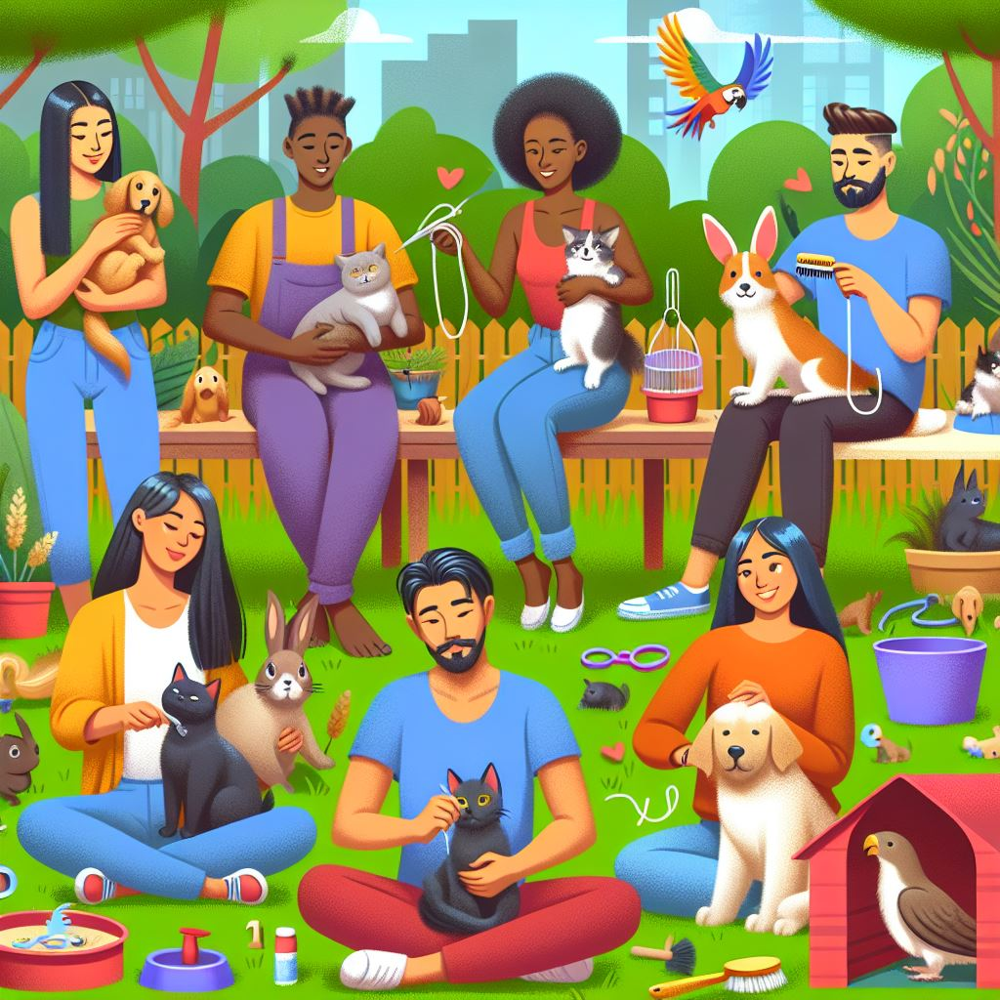

Cuidados essenciais com seu Pet

Ter um pet é uma experiência maravilhosa, mas também exige responsabilidade e dedicação. Aqui estão algumas dicas essenciais para garantir que seu amigo de quatro patas tenha uma vida saudavel e feliz:
- Alimentação Adequada: Ofereça uma dieta balanceada e específica para a espécie e idade do seu
pet. Consulte um veterinário para escolher a melhor ração ou dieta natural.
- Hidratação: Mantenha sempre água fresca e limpa disponível. A hidratação é fundamental para a saúde do seu pet.
- Exercícios Regulares: Animais precisam de atividade física para se manterem saudáveis. Passeios diários, brincadeiras e exercícios são essenciais, especialmente para cães.
- Higiene: Banhos regulares, escovação dos pelos e cuidados com as unhas são importantes para a higiene e bem-estar do seu pet. Verifique também a limpeza dos ouvidos e dentes.
- Visitas ao Veterinário: Leve seu pet ao veterinário regularmente para check-ups e vacinas. A prevenção é a melhor forma de evitar doenças.
- Ambiente Seguro: Garanta que o ambiente onde seu pet vive seja seguro, sem objetos perigosos ou substâncias tóxicas ao alcance.
- Amor e Atenção: Dedique tempo para brincar e interagir com seu pet. O carinho e a atenção são fundamentais para o bem-estar emocional deles.
- Educação e Treinamento: Ensine comandos básicos e socialize seu pet desde filhote. Isso ajuda a evitar comportamentos indesejados e fortalece o vínculo entre vocês.
Seguindo essas dicas, você estará proporcionando uma vida mais saudável e feliz para o seu pet. Lembre-se, eles dependem de nos para tudo e merecem todo o nosso cuidado e amor.